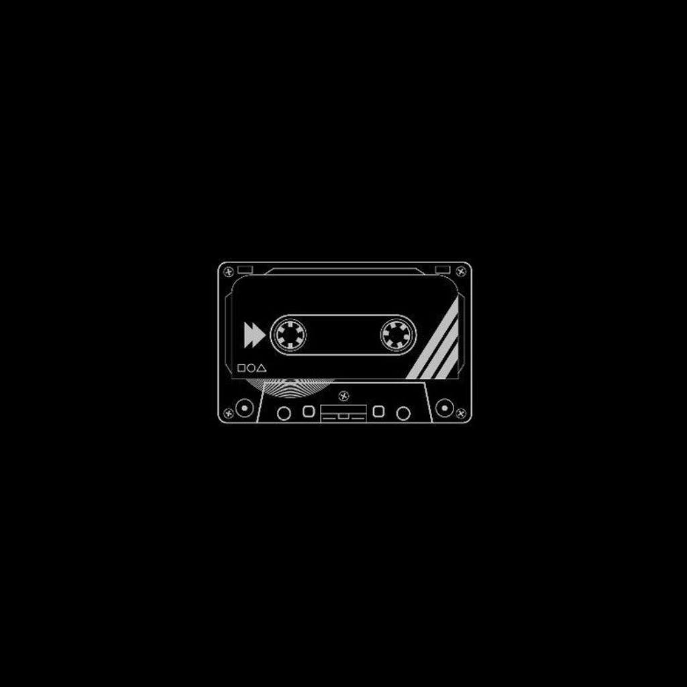

Start where you are.
Pick a short Sprint, a familiar Pomodoro, or a longer Deep or Flow stretch. Adjust the focus and break length to suit the day.

retro. Private beta✳ a small ritual for a clearer day
A calm little focus studio for Mac. Choose a rhythm, set a sound, and let one thing have your attention.
Retro for Mac is in private beta · not publicly downloadable
Illustrative interface preview · not a screen recording
Open Retro. Name the next small thing. Choose a stretch that feels possible. That’s the whole invitation.
No dashboards to keep up with. No streaks shouting at you. Just a gentle place to begin, and a clear signal when it’s time to pause.
Watch the little walkthrough ↘Here’s the shape of a session: make a plan, find your rhythm, and come back to yourself when the timer ends.
Pick a short Sprint, a familiar Pomodoro, or a longer Deep or Flow stretch. Adjust the focus and break length to suit the day.
Put on original Lo-fi, Jazz, Piano, or Rain loops—or leave the room quiet. The bundled tracks play without a streaming tab.
When a session ends, a gentle reminder can cue a proper pause. Optional breathing prompts help make that pause feel like one.
Original loops made for this project. No feed, no algorithm—just a sound bed when you want one.
Four original, procedurally composed loops · CC0 audio · volume stays in your hands.
A focus companion—not a system takeover. Turn on only the helpers you actually want.
Timer, music, Now Playing, blocker and settings live in one small native Mac app, with a cassette in the menu bar and Dock.
Sprint 15/3 · Pomodoro 25/5 · Deep 50/10 · Flow 90/15. Keep your streak and completed sessions on your Mac.
Gentle reminders, breathing cues, music ducking, and browser/site shields are optional and off until you choose them. Some controls need macOS permission.
Scan Apple Music or Spotify for now playing. Browser audio uses Mac media keys; metadata depends on what macOS exposes.
Private beta · details below ↘✳ still finding its rhythm
Retro for Mac is in private beta and isn’t available for public download yet. This page is a product preview, not an installer.